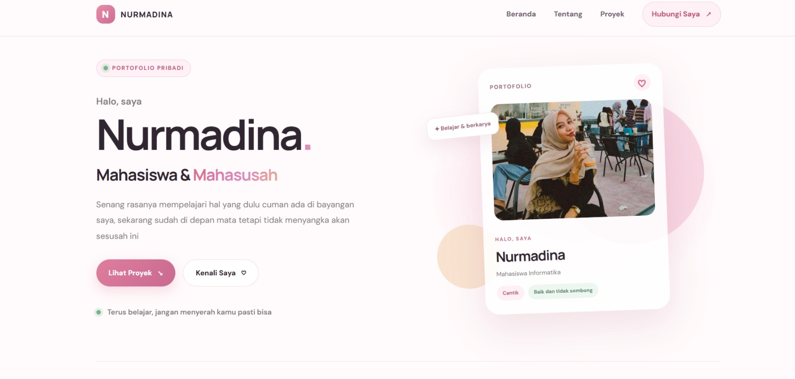
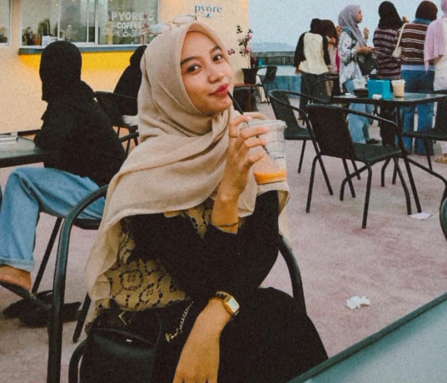
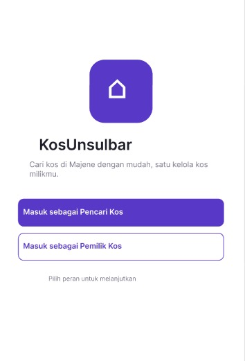
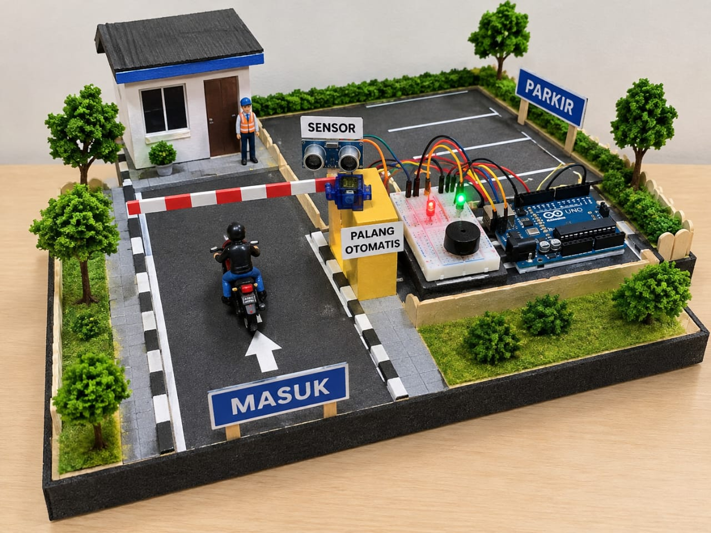

Portofolio Pribadi
Website pribadi untuk memperkenalkan diri, menampilkan karya, serta berbagi informasi tentang minat dan proses belajar saya
Lihat detail ↗Halo, saya
Senang rasanya mempelajari hal yang dulu cuman ada di bayangan saya, sekarang sudah di depan mata tetapi tidak menyangka akan sesusah ini

Mahasiswa Informatika
Saya suka makan bakso dan mie ayamm. Minuman yang paling saya suka itu jeruk peras, karena lebih seger aja gitu di tenggorokan dari minuman lainnya. Selain itu saya juga suka minum ThaiTea
Beberapa contoh proyek untuk menunjukkan proses belajar dan ide yang saya kembangkan.

Website pribadi untuk memperkenalkan diri, menampilkan karya, serta berbagi informasi tentang minat dan proses belajar saya
Lihat detail ↗
Aplikasi untuk membantu pengguna mencari tempat kos berdasarkan lokasi, harga, dan fasilitas yang sesuai dengan kebutuhan
Lihat detail ↗
Sistem palang otomatis menggunakan Arduino Uno dan sensor untuk mendeteksi objek serta mengatur buka-tutup palang sesuai rancangan
Lihat detail ↗Ada ide, hal yang ingin didiskusikan, atau sekedar ingin menyapa? Kirim pesanmu lewat formulir di samping, ya!